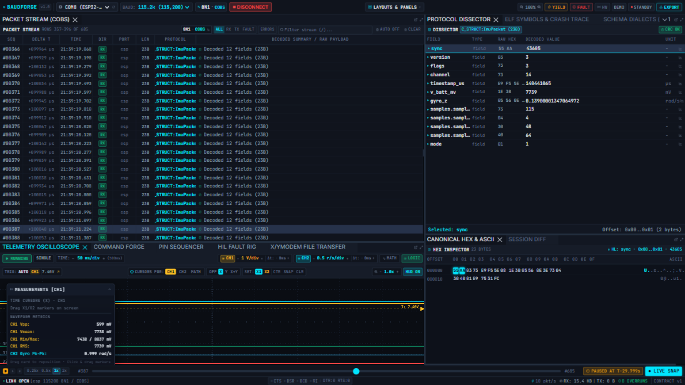
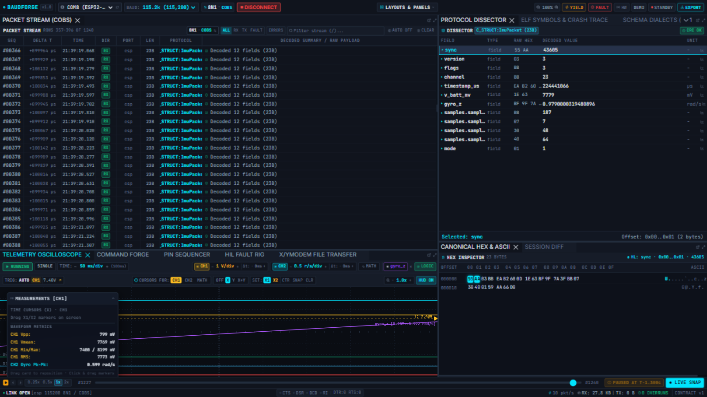

Telemetry Oscilloscope
The oscilloscope plots your telemetry the way lab hardware does: two analog channels, logic rails, cursors, a measurements HUD — and trace lanes bound straight from your decoded protocol fields.

Channels
- CH1 / CH2 — pick any decoded numeric field per channel (the dropdown lists every field the current schema produces). The channel badge shows its scale, e.g.
1 V/div,0.5 r/s/div. - MATH — a derived trace.
- LOGIC — the serial line state rails (break/framing/parity events from the wire).
- Click a channel badge to toggle visibility; the colour key at the top right of the canvas shows what each rail is.
RUNNING / STOPPED freezes the display: the canvas keeps the last frame drawn (frozen state is verifiable — the frame is really still there, not blanked) so you can read it at leisure. Time base (50 ms/div) zooms the horizontal axis.
Measurements HUD
The HUD overlays live waveform metrics per channel — Vpp, Mean, RMS — computed over the visible window, so a drifting sensor bias or a rail collapse is visible without exporting anything.
Trace lanes (per-field plots)
The workbench's headline trick: plot any decoded field over time.
- Select a frame in the Packet Stream.
- In the Protocol Dissector, click the 📈 button on a numeric field (e.g.
gyro_z). - A coloured lane appears below the analog zone, auto-scaled, labelled with the field name — updating live with every frame.

Multiple fields → multiple lanes. In the scope ribbon each lane stem can be toggled or unbound; unbinding also works from the dissector's plot button (it toggles).
Scope-click sync (Workflow B)
This is the instrument-level time machine:
- Make sure the cursor mode is armed (default
X1/X2behaviour; setOFFfor pure playhead seeking). - Click anywhere on the canvas.
- The playhead snaps to the clicked instant, the Packet Stream selects the nearest frame to that timestamp, the dissector and hex view follow, and the DVR bar shows
PAUSED AT T-1.116s.

This is how you go from "the gyro spiked around 14:32" to the exact frame in two clicks. Press LIVE SNAP or Space to return to the live tail.
Cursors
Cursor modes: OFF (seek-only), X1/X2 (time cursors), Y (amplitude cursors), X-Y (phase plot). SET X1/X2 drops a cursor at the playhead; CTR centres, SNAP snaps cursors to frame timestamps, CLR clears. The 1.8x control zooms the cursor region.
Tips
- While the live capture is paused the scope keeps repainting the buffered window — scrub the DVR bar and the scope scrubs with you.
- Trace lanes survive schema changes as long as the field name still exists; if a rename leaves a lane orphaned, unbind and re-plot from the new field.